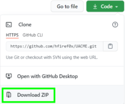
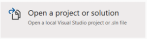
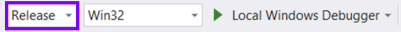
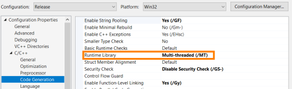
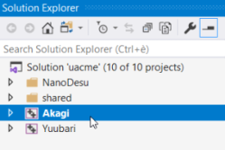
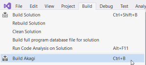
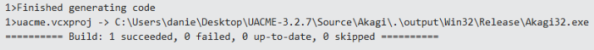

how compile from the Source already Downloaded
32 bit: https://github.com/DenFox93/Compiled-programs/raw/main/Akagi32.exe
64 bit: https://github.com/DenFox93/Compiled-programs/raw/main/Akagi64.exe
Save the source code

1. File → Open → Project/Solution

2.We have to open the structure Visual Studio file : ..\UACME-3.2.7\Source\uaclme.sln
3.We have to select the option:
Release → to build without runtime dependencies
Win32 or x64 → if we want build it for 32 or 64 bit systems

4.Now we have to right click on Akagi →

5. We need to set the runtime library to static link
C/C++ -> Code Generation → Runtime Library: Multi-threaded (/MT)

6. Only select(left-click) the module Akagi

7. and Build → Build Akagi

After that we have Build(compiled) the project we will find Akagi32.exe file in:
..\UACME-master\Source\Akagi\.\output\Win32\Release\Akagi32.exe
